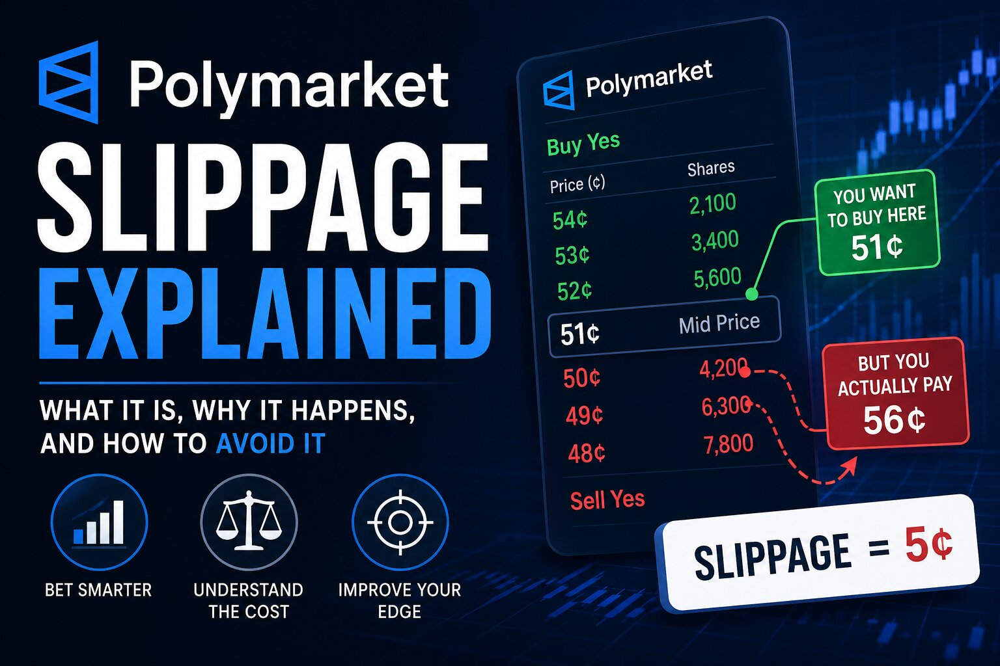

Polymarket Slippage Explained: Why Your Fill Price Isn't the Quoted Price

The short answer
Slippage is the gap between the price a Polymarket order book shows you before you trade and the average price you actually pay once your order fills. It shows up because a market order doesn't fill at one price — it "walks the book," eating through each resting order at successively worse prices until your full size is filled. On a deep, high-volume market like a major election, a few thousand dollars might not move the price at all. On a thin market, the same trade can cost you several cents more per share than the quote suggested. Understanding slippage is the difference between a strategy that looks profitable on paper and one that actually is once real execution costs are included.
Why slippage happens on a CLOB
Polymarket runs on a central limit order book, not an automated market maker. That matters here: every order on the platform is technically a limit order, and what people call a "market order" is really just a limit order priced aggressively enough to execute immediately against whatever is resting in the book. Depth is arranged in price levels — some number of shares available at the best price, more at the next price, more after that. A market order for more shares than sit at the top level automatically fills the top level first, then moves to the next level, and so on, until the order is complete or there's nothing left to fill against. The average price you paid across all those levels, compared to the best price you started at, is your slippage.
A concrete example
Picture a market quoting a best ask of 53¢. That looks like the price. But suppose only 2,000 shares are actually available at 53¢, another 3,000 at 53.5¢, and you're trying to buy 7,000 shares total. The remaining 2,000 shares fill at a third, higher level. Your blended average fill price ends up meaningfully above 53¢ — not because the market moved against you from outside news, but purely because your own order consumed the visible depth. Traders typically express this in basis points: the percentage difference between the reference price and the actual average fill, multiplied by 10,000. A trade that costs 58 basis points of slippage against an expected edge of 40 basis points has already gone negative before fees are even counted.
What drives how much you'll pay
A few factors determine whether slippage on a given trade is negligible or painful:
Market liquidity. Flagship markets — presidential elections, Fed decisions, major sporting championships — can often absorb tens of thousands of dollars in order flow with minimal price impact. Most markets on the platform are nowhere near that deep, and a trade of just a few hundred dollars can move the price noticeably.
Order size relative to book depth. The bigger your order relative to what's resting at each price level, the further it walks the book, and the worse your blended fill gets.
Spread width and book shape. A tight bid-ask spread with even depth on both sides is a sign of a liquid, well-quoted market. A wide spread, or a book that's deep on the ask side but thin on the bid side (or vice versa), tells you liquidity is one-directional — fine if you're trading with the deep side, expensive if you're not.
Timing. Breaking news, a polling release, or a late swing in a sporting event can thin out the book in seconds as market makers pull quotes, which is exactly when slippage tends to spike.
How to actually calculate it
The basic formula is straightforward. For a buy: slippage = (average fill price − reference price) ÷ reference price. For a sell, it's the reverse. The reference price is usually the best quoted price at the moment you placed the order — the top-of-book ask for a buy, or the top-of-book bid for a sell. Expressing the result in basis points (multiply by 10,000) makes it easy to compare slippage across markets of very different price levels, and to check whether a strategy's expected edge actually survives real execution costs once slippage and fees are subtracted.
Market orders vs. limit orders
The single biggest lever you have over slippage is which order type you use. A market order buys certainty of execution but gives up control over price — you take whatever the book gives you, level by level. A limit order flips that trade-off: you name your price, and the order only fills if the market comes to you, but you never pay more than you specified. Placing a limit order also means you avoid slippage entirely by definition, and on many platforms — Polymarket included, through its liquidity rewards program on select markets — you can even get paid for resting limit orders that add depth near the midpoint. The cost of that control is time: in a fast-moving market, a limit order that never gets touched means you simply don't trade, and sometimes the certainty of a market order is worth paying for.
Practical ways to reduce slippage
A few habits go a long way:
Check the order book before you trade, not just the last price. The last traded price tells you nothing about how much depth sits behind it. Look at the actual levels.
Break large orders into smaller pieces. Splitting a big position into several smaller orders, spaced out over time, lets the book refill between fills instead of walking straight through several levels at once.
Use limit orders when you're not in a hurry. If the trade isn't time-sensitive, naming your price and waiting is close to a free option on avoiding slippage altogether.
Be extra cautious in thin or newly listed markets. Lower-volume markets on niche or long-tail events can have very little resting depth, so even modest position sizes can move the price a lot.
Watch for news-driven windows. Right after a headline breaks, books often thin out fast as market makers reassess. Waiting a few minutes for liquidity to return can meaningfully cut your execution cost.
The bigger picture
Slippage isn't a flaw or a hidden fee — it's simply the visible cost of demanding immediate execution from a market that has finite depth at any given price. Every central limit order book works this way, on Polymarket or anywhere else. The traders who do best over time tend to be the ones who treat the order book as information, not just a price ticker: they size positions relative to visible depth, lean on limit orders when they can afford to wait, and factor expected slippage into whether a trade is worth making in the first place.
Disclaimer: This post is for informational purposes only and is not financial or investment advice. Market conditions, liquidity, and fee structures change continuously — always check live prices and order book depth at polymarket.com before trading.